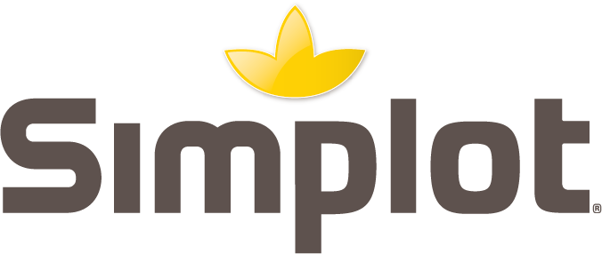
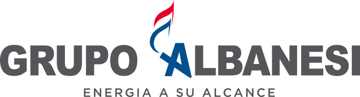
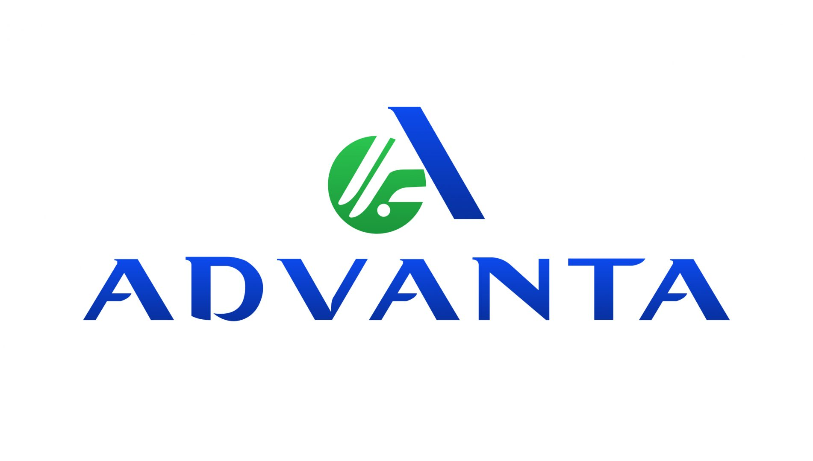
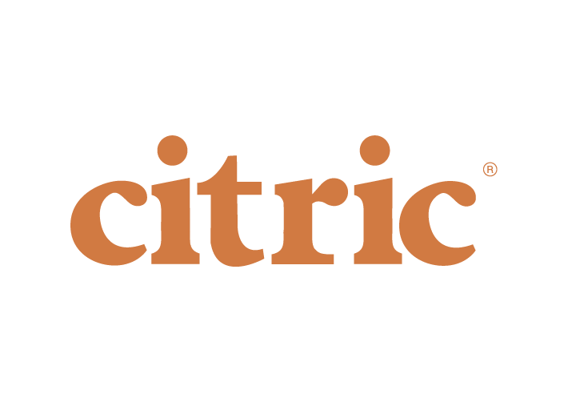
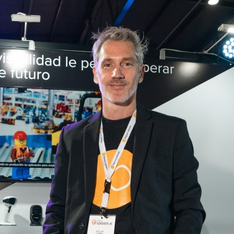

/00
// Módulos certificados
SD · MM · FI · CO · PP · ABAP
Especialistas por área. Cada módulo a cargo de un experto certificado.

Implementaciones, soporte y desarrollo SAP para empresas que no pueden permitirse que sus operaciones fallen.




Un núcleo de consultoría SAP. Cinco capacidades conectadas.
Especialistas por área. Cada módulo a cargo de un experto certificado.
Soluciones reales entregadas en tiempos récord con reducción drástica de desarrollo.
Experiencia documentada en verticales donde SAP es crítico.
Quien diseña el proyecto es quien lo ejecuta. Sin intermediarios.

Consultor SAP SD certificado desde 2007. Proyectos en Bunge, Givaudan, Molinos Río de la Plata. Neptune Software Partner para Argentina y Cono Sur. Lic. en Análisis de Sistemas (UAI). Posgrado en Liderazgo Ejecutivo (U. Belgrano).
Especialista en alianzas estratégicas y desarrollo de negocio. Background en IBM, Avnet, Druidics. Foco en clientes enterprise y partners. Posgrado en Dirección de Empresas (U. Austral). Miembro Vistage Argentina.
Agregá foto
y bio aquí
Esta tecnología permite desarrollar apps SAP mobile y offline en una fracción del tiempo habitual. Sin infraestructura adicional. Sin depender de conectividad.

Único Partner oficial
en Argentina y Cono Sur
El primer diagnóstico es sin costo y sin compromiso.
Agendar diagnóstico